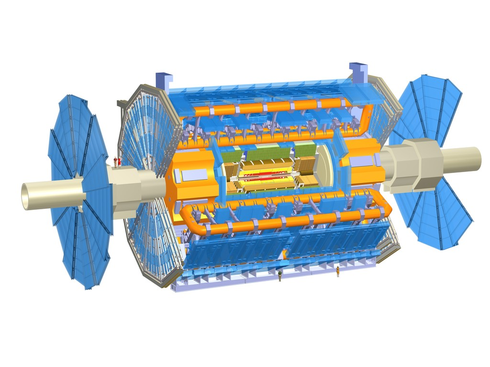
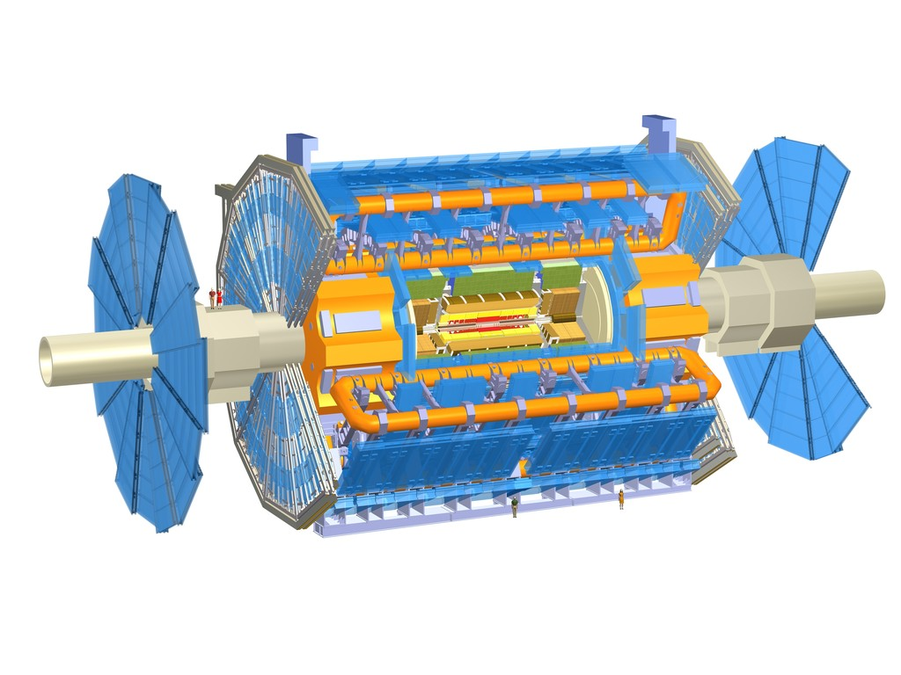

On the CMS experiment (2011-2014), worked on searches for
signatures of new Supersymmetric particles, on the pixel upgrade
and the beamspot measurement.
We did the first dedicated searches for SUSY top quark partners using
CMS data. These analyses are sensitive to top squarks with masses
interesting range for natural SUSY models.
The CMS forward pixel detector upgrade project will replace the
current forward pixel detector in 2016. The mechanical support structures using
advanced carbon materials and the cooling based on two-phase CO2
are some of the innovative ways that the detector will reduce the
amount of material and improve its performance.
Luminous
Region, Beamspot
The measurement of the luminous region, where the LHC beams
collide using reconstructed tracks and vertices, is important for the alignment and calibration of the
detector. It also provides feedback to the LHC.
Previously
on the ATLAS Experiment
On the ATLAS experiment (2006-2011), worked on measurements of the
inclusive W boson cross section and the construction, commissioning
and integration of the Monitored Drift Tube chambers
(MDTs). ATLAS Thesis Award 2011.


 
